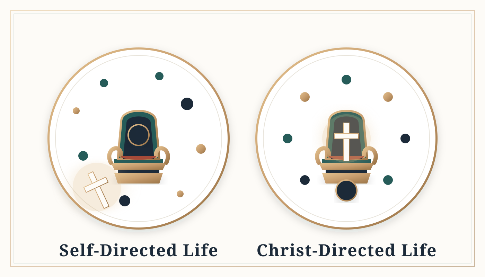
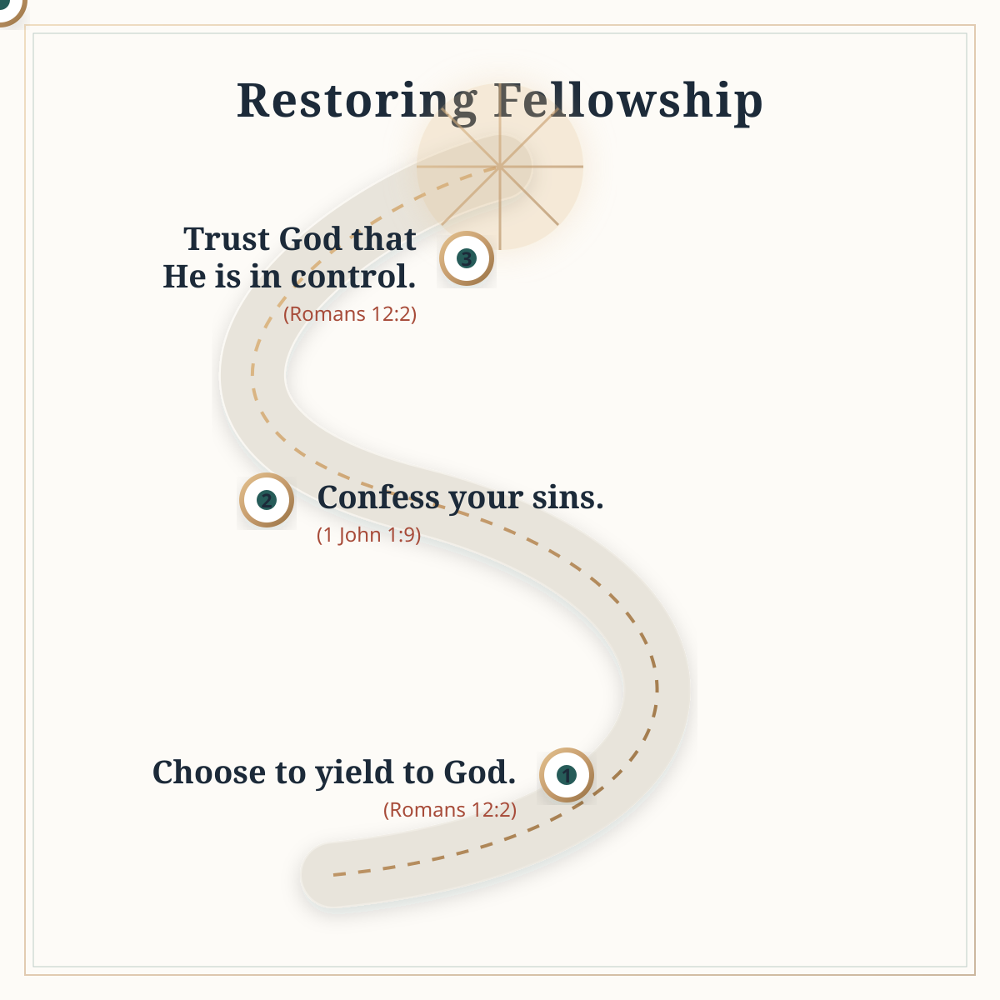
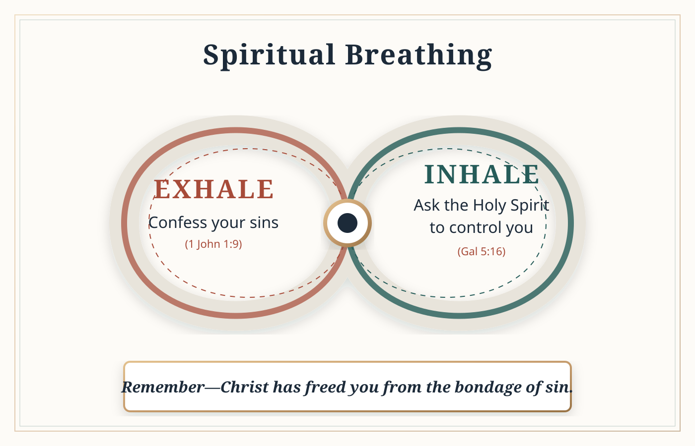
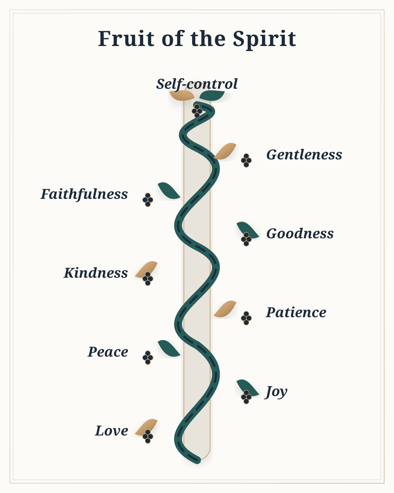
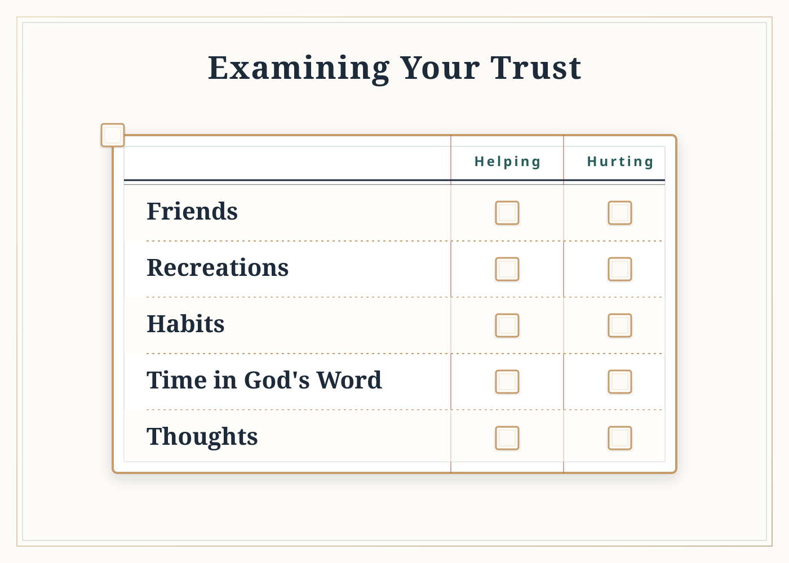
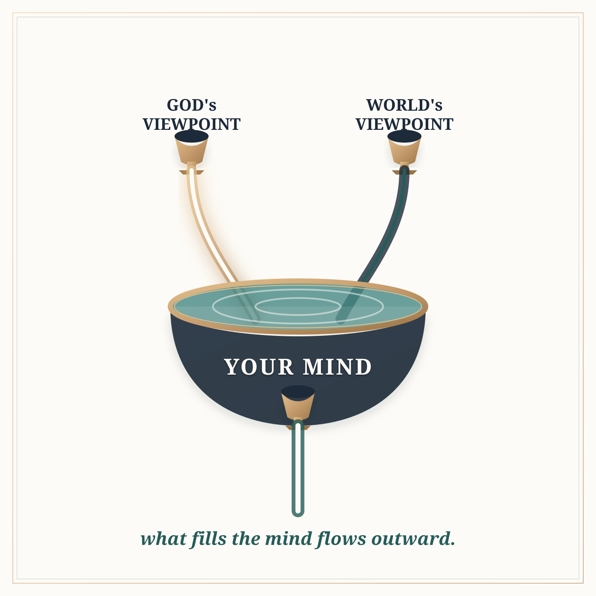

A family of six redesigned teaching graphics presented as heirloom-quality editorial illustrations. Tactile warmth, subtle depth, elegant typography, and a deliberate palette derived from the book's mountain-path cover.
Reimagined as elegant seals representing the life and the throne.

Three ordered steps connected by a golden thread leading upward.

An elegant infinity-loop representing the continuous breath of confession and yielding.

A literal, elegant vine weaving upwards, bearing the nine fruits.

Designed as a beautifully typeset print ledger to remain functionally markable.

The reservoir metaphor reimagined with two streams pouring into an elegant stone basin.
